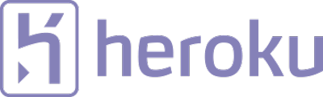
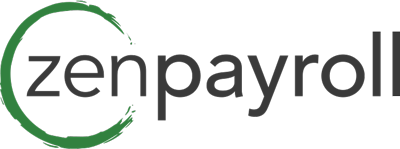

What if 1 Sidekiq process could do the job of 20 Resque or DelayedJob processes?
Trusted By
- 
- 
Meet the Sidekiq Suite
Interested in trying Sidekiq out on your own project?
Check out the source code and documentation on GitHub to get started.
Take me to GitHubInterested in trying Sidekiq out on your own project?
Check out the source code and documentation on GitHub to get started.
Learn more & BuyInterested in trying Sidekiq out on your own project?
Check out the source code and documentation on GitHub to get started.
Learn more & Buy